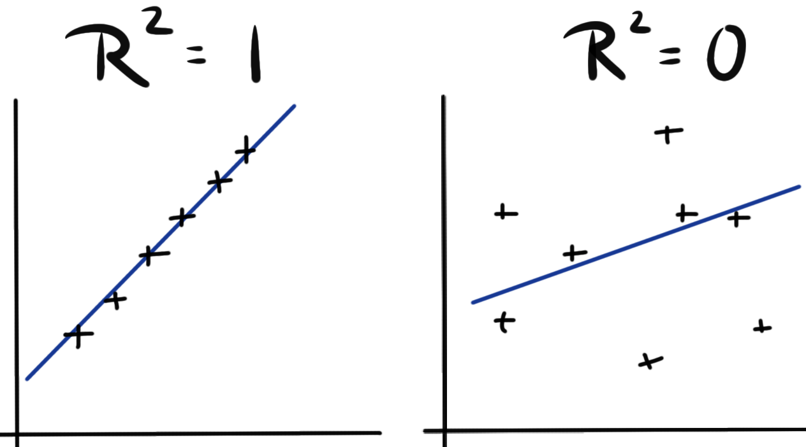
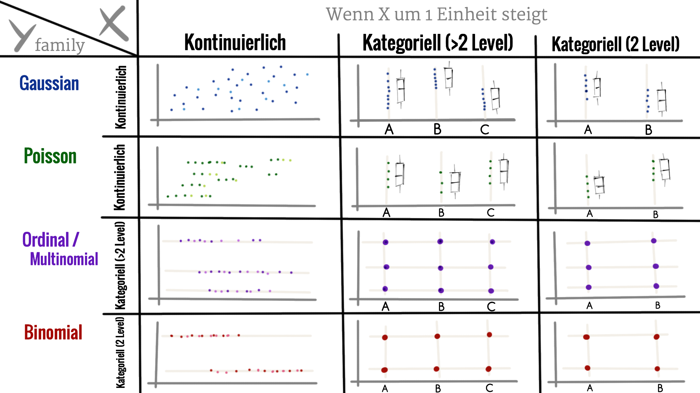

Statistisches Modellieren
Genutzte R Pakete für das Kapitel
Wir wollen folgende R Pakete in diesem Kapitel nutzen.
pacman::p_load(tidyverse, magrittr, conflicted, broom,
multcomp, emmeans, ggpubr)
conflict_prefer("select", "dplyr")
conflict_prefer("filter", "dplyr")
conflict_prefer("mutate", "dplyr")Am Ende des Kapitels findest du nochmal den gesamten R Code in einem Rutsch zum selber durchführen oder aber kopieren.
Daten
model_tbl <- read_csv2("data/flea_dog_cat_length_weight.csv") %>%
mutate(animal = as_factor(animal))In der Tabelle 1 ist der Datensatz model_tbl nochmal dargestellt.
| animal | sex | weight | jump_length |
|---|---|---|---|
| cat | male | 6.02 | 16.93 |
| cat | male | 5.99 | 16.22 |
| cat | male | 8.05 | 18.96 |
| cat | male | 6.71 | 19.83 |
| cat | male | 6.19 | 17.37 |
| cat | male | 8.18 | 14.45 |
| cat | male | 7.46 | 15.46 |
| cat | male | 5.58 | 15.81 |
| cat | male | 6.19 | 19.14 |
| cat | male | 7.53 | 15.72 |
| cat | male | 7.12 | 14.65 |
| cat | male | 6.18 | 17.21 |
| cat | male | 7.04 | 14.07 |
| cat | male | 5.91 | 15.50 |
| cat | male | 6.84 | 15.37 |
Simple lineare Regression
\[ y \sim x_1 \]
\[ y \sim \beta_0 + \beta_1 x_1 + \epsilon \]
| \(\boldsymbol{y \sim \beta_0 + \beta_1 x_1 + \epsilon}\) | \(\boldsymbol{y = mx +b}\) | Deutsch | Englisch |
|---|---|---|---|
| \(\beta_1\) | \(m\) | Steigung | Slope |
| \(x_1\) | \(x\) | Einflussvariable | Risk factor |
| \(\beta_0\) | \(b\) | y-Achsenabschnitt | Intercept |
| \(\epsilon\) | Residuen | Residual |

\[ \epsilon \sim \mathcal{N}(0, s^2_y) \]
Multiple lineare Regression
\[ y \sim x_1 + x_2 + ... + x_p \]
\[ y \sim \beta_0 + \beta_1 x_1 + \beta_2 x_2 + ... + \beta_p x_p + \epsilon \]
sim_tbl <- tibble(dog = rnorm(100, 10, 2),
cat = rnorm(100, 15, 2),
fox = rnorm(100, 20, 2)) %>%
gather(animal, jump_length) %>%
mutate(animal = as_factor(animal))
lm(jump_length ~ animal, data = sim_tbl)
Call:
lm(formula = jump_length ~ animal, data = sim_tbl)
Coefficients:
(Intercept) animalcat animalfox
9.6566 5.3350 10.5153 model.matrix(jump_length ~ animal, data = sim_tbl) (Intercept) animalcat animalfox
1 1 0 0
2 1 0 0
3 1 0 0
4 1 0 0
5 1 0 0
6 1 0 0
7 1 0 0
8 1 0 0
9 1 0 0
10 1 0 0
11 1 0 0
12 1 0 0
13 1 0 0
14 1 0 0
15 1 0 0
16 1 0 0
17 1 0 0
18 1 0 0
19 1 0 0
20 1 0 0
21 1 0 0
22 1 0 0
23 1 0 0
24 1 0 0
25 1 0 0
26 1 0 0
27 1 0 0
28 1 0 0
29 1 0 0
30 1 0 0
31 1 0 0
32 1 0 0
33 1 0 0
[ reached getOption("max.print") -- omitted 267 rows ]
attr(,"assign")
[1] 0 1 1
attr(,"contrasts")
attr(,"contrasts")$animal
[1] "contr.treatment"Korrelation theoretisch
\[ \rho = r_{x,y} = \cfrac{s_{x,y}}{s_x \cdot s_y} \]
\[ s_{x,y} = \sum_{i=1}^n(x_i-\bar{x})(y_i-\bar{y}) \]
\[ s_x = \sum\_{i=1}^n(x_i-^\bar{x})2 \]
\[ s_y = \sum_{i=1}^n(y_i-\bar{y})^2 \]


Korrelation in R
Korrplot…
Spearman vs Pearson…
Bestimmtheitsmaß \(R^2\)

Schlangen Beispiel
Modell matrix?
Der Kruskal-Wallis-Test vergleicht die Mediane mehrerer beliebiger Verteilungen miteinander.
Du findest auf YouTube Statistik und Data Science - Teil 15.0 - Modellierung in der Statistik als Video Reihe. Ich werde zwar alles nochmal hier als Text aufschreiben, aber manchmal ist das Sehen und Hören dann einfacher.
Wir nutzen folgende
Verzerrung oder Bias
Wenn ein statistischer Test ein falsches Ergebnis liefert, weil die Daten nicht die Voraussetzungen des statistischen Tests erfüllt haben.
Robust
Wir sagen, dass ein statistischer Test robust ist, wenn wir meinen, dass Annahmen an die Daten falsch sein können und der statistsiche Test dennoch unverzerrte Ergebnisse liefert.
Homogenität und Heterogenität der Varianzen
Eine Varianzhomogenität liegt vor, wenn die Varianzen der Gruppen gleich sind.
\[ s^2_{dog} = s^2_{cat} = s^2_{fox} \]
Eine Varianzheterogenität liegt vor, wenn die Varianzen der Gruppen ungleich sind.
\[ s^2_{dog} \neq s^2_{cat} \neq s^2_{fox} \]
Balancierte Daten
Wir haben balancierte Daten vorliegen, wenn in jeder Gruppe gleich viele Beobachtungen sind.
\[ n_{dog} = n_{cat} = n_{fox} \]
Ein unbalanziertes Design heißt, dass wir nicht in jeder Gruppe die gleiche Anzahl an Beobachtungen vorliegen haben.
\[ n_{dog} \neq n_{cat} \neq n_{fox} \]
Wir reden von balanziertem Design und meinen dmit die Behandlungsgruppe oder den Faktor mit den zu vergleichenden Leveln. Natürlich kann es über den gesamten Datensatz Faktoren mit unterschiedlichen Belegungen an Beobachtungen geben.
Abhänig vs. unabhänige Daten
Formula

\[ y \sim x \]
lm()
glm()
Residualplot
##glance()
##augment()QQ-Plot
Das Regressionskreuz

Kausales Modell
Prädiktives Modell
tidymodels
https://www.tmwr.org/models.html
Package see
https://easystats.github.io/see/articles/performance.html